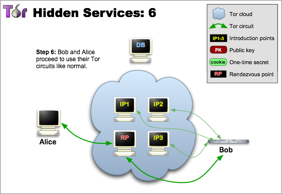
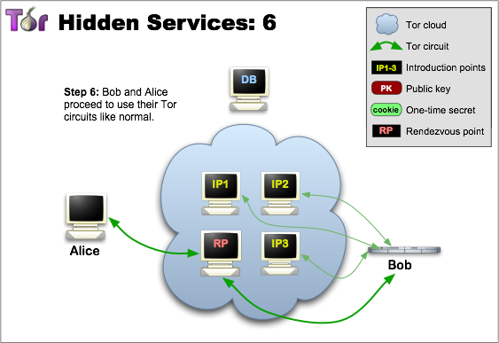

Bridges and Pluggable Transports
Sometimes, a direct connection into the Tor network is not possible due to censorship. That's where bridges, alternative entries into the Tor network come in, and to prevent your ISP or others from knowing you're using Tor, pluggable transports come into the picture. Pluggable transports are a special type of bridge that hides the fact you are using Tor through different methods, the hiding part employing some form of cryptography.
Here's a page listing the types of pluggable transports.
To get bridges for Tor, first go here. Then click on "Get Bridges". Then click on "Just Give Me Bridges" or used the advanced box to choose the pluggable transport you want to use and if you need an IPv6 address. Solve the capcha and you'll get a batch of three bridges. In your Tor settings, configure your connection and say yes when asked if your ISP censors connections to the Tor network. If your network goes through a proxy, you must also set Tor to use it. You can then copy and paste your bridges into the box below.
You don't have to enter bridges as Tor has its own default configured bridges.


 
